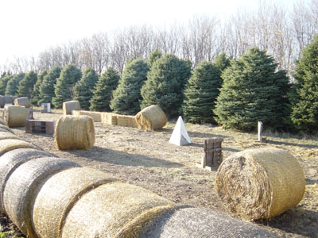
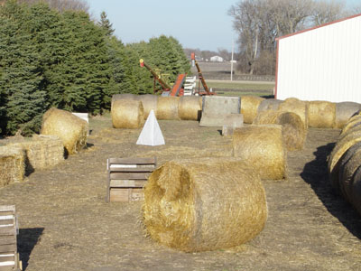
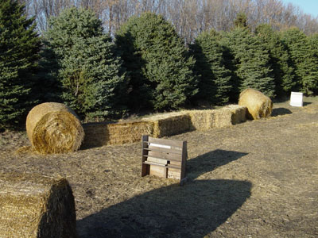

| Main Page | Team Members | Markers | Field | Projects | Bonus |
GENERAL INFORMATION: Project Name: Speed-bale Project Status: Completed Timeframe: March 21 - 27, 2004 Design: The Cattle Clan Build Team: The Cattle Clan
DESCRIPTION: Imagine a speedball field. What would you get if you replaced the air bunkers with straw bales and the air compressor with a John Deere skidloader? Wouldn't it be great to find out?
BUILD LOG: March 21: David began moving bales to set up the barrier. Daniel took over and moved away the extra bales. March 26: David and Brian loaded some wooden bunkers on a trailer and moved them into the speed-bail field. March 27: Sqare bales were moved onto the field to create a "snake." Crop bunkers were moved in for the starting locations.
|
 |
| View from south-east corner |
|
 |
| View from west end |
|
 |
| View of the "snake" |
FINAL THOUGHTS: David: "Not only did it take a minimal amount of effort to put together, its also fun to play on. Players prefer to take cover behind the large bales rather than the wooden pallets. But they don't realize that because bales are round, parts of their bodies may be visible even if they think they are completely behind the bale."
| Previous Project | Next Project |
| Main Page | Team Members | Markers | Field | Projects | Bonus |